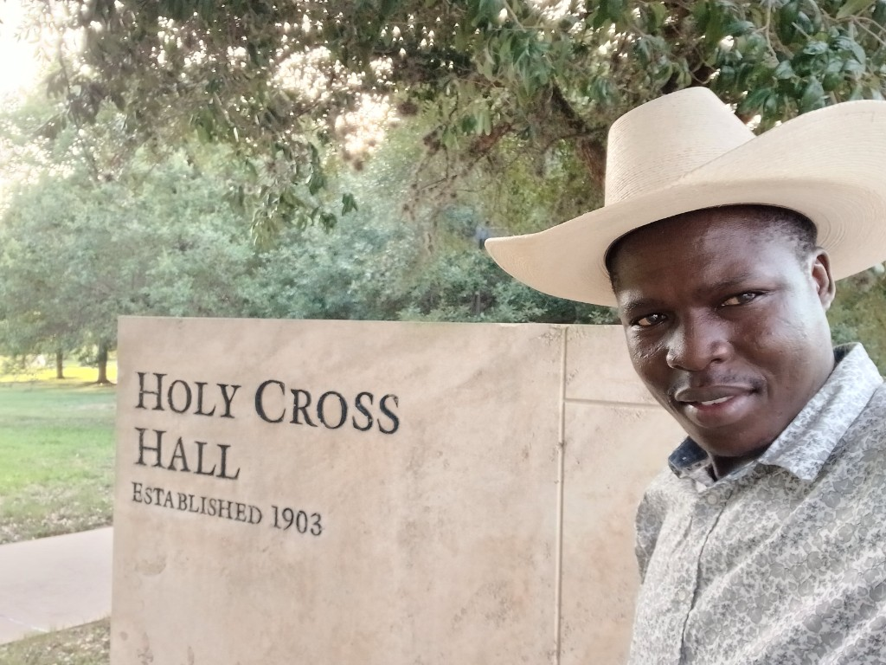

Evidence & field model
Impact from access to advocacy
Programming threads product reach, transferable skills (reusable pads, soap), stigma-aware campaigns, and school continuity signals into one braid — aligning with Soroti-linked press, Nexus rights framing, and Nuffic-style WASH integrations Eric cites publicly.
Pillars
Where change surfaces
Distribution — Kiosk routes and SACCO-adjacent handoffs so menstrual supplies move like other weekly essentials.
Production skills — Multi-day pad and soap curricula where men practise alongside girls, normalising care labour.
School continuity — Changing rooms paired with absorbent predictability plus anonymised SMC dialogues.
Stigma reduction — Clergy scripting, adolescent coalitions, and radio arcs that penalise menstrual mockery sustainably.
Soroti training
The Cooperator-style reporting captured pad + soap skills bootcamps that alumni teach forward.
Rights
Nexus Media interviews frame period deprivation as intertwined with schooling and humane sanitation access.
WASH linkage
Regional briefings stress menstrual dignity stalls when boreholes exist but latrine lighting or disposal paths fail girls.
Evidence
Research & references
Cewas' regional analysis underscores barriers female hygiene entrepreneurs navigate — language Eric adopts when structuring blended finance dialogues alongside county partners.

Architecture
Program spine
- 01 Access — repeatable supply loops.
- 02 Capacity — certify peers maintaining quality.
- 03 Advocacy — menstrual rows on council agendas.